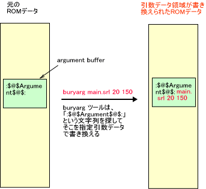

NITRO-SDK では、ROMイメージに引数データ領域を設け、その部分を起動時に書き換えることで、プログラムに C言語 の argc, argv 形式の引数として利用できるパラメータを与える仕組みを提供します。起動時に ROM イメージファイルを書き換えるので、プログラムを再コンパイルしなくても複数の条件下でプログラムを試すことが出来ます。
buryarg は、指定のバイナリデータに対して、引数データ領域に引数データを書き込むためのツールです。
% buryarg [OPTION]... NITROBINFILE [argument]...
NITROBINFILE は、書き換えの元となる ROM ファイルです。srl ファイルや、sbin ファイルが指定できます。また、nlf
ファイルを指定すると、nlf ファイルを解析して ARM9 の常駐モジュールファイル
を入力ファイルとします。
-r または --remain オプションを指定すると元のファイルを残します。デフォルトでは元ファイルを変更しますので、元のファイルを変更したくない場合はこのオプションを指定します。なお別名のファイルは、元ファイルに ".argAdded " のついたファイル名となります。 -o オプションで出力ファイルを選択した場合はこのオプションを指定しなくても元ファイルは変更されません。
-o または --output オプションは引数をとります。このオプションは、出力ファイルを、-o=dest.srl または -o dest.srl のように指定します。出力ファイルとして元ファイルと同じファイルを指定しないようにしてください。また、出力ファイルとして "-" (マイナス) を指定すると、標準出力に対し出力します。( -o- のように指定します。) 後述の --stdout も参照してください。
--stdout は、-o- の指定と同じです。標準出力に対し出力します。
-f または --file オプションは引数をとります。このオプションは、置き換えるデータをファイルで指定するためのものです。-f=rep.dat または -f rep.dat のように指定します。
-q または --quiet オプション を指定すると quiet モードとなり、エラー以外のメッセージを出しません。
-v または --verbose オプションを指定すると、詳細な動作の説明を表示します。
-h または --help オプションは、簡単な使い方を表示します。
-d または --debug オプションは、デバッグのためのオプションです。置き換えるデータをダンプします。
--version オプションは、コマンドのバージョンを表示します。
コンパイルした直後の ROM データの中では、引数データ領域には、引数データの位置を示すための文字列が書き込まれています。buryarg では、この文字列を ROM から探し出して、その直後に引数データを書き込みます。位置を示すための文字列は書き換わりませんので、同じ
ROM データに対して何度でも引数データを書き込むことが出来ます。

プログラム中からは、引数領域のデータに OS_GetArgc() 、 OS_GetArgv() でアクセスすることが出来ます。
(注意) 以下のようなミスにご注意ください。
・-oオプションで、入力ファイルと同じファイルを指定した。
→ 上書きしたい場合、デフォルトでその動作を行ないます。
・ srl ファイルに対して引数データの書き換えを行なった。そして nlf ファイルから起動した。
→ nlf から起動した場合、そこにかかれているモジュールが読み込まれます。本コマンドで nlf ファイルを指定してください。
・nlf ファイルに対してデータの書き換えを行なった。そして srl ファイルを起動した。
→ srl ファイルに対して引数データの書き換えを行なってください。
・引数データ領域のないイメージに対して引数データ書き換えを行なおうとした。
→ 古いSDK で作成された ROM イメージやモジュールには引数データを書き込む領域が用意されていません。そのイメージに対して本コマンドを実行すると、引数データ領域を表す文字列が見つからないというエラーを表示して終了します。
・FINALROM ビルドのイメージに対して引数データ書き換えを行なおうとした。
→ FINALROM ビルドのイメージには引数データを格納する領域がありません。
$NitroSDK/tools/bin/buryarg.exe
OS_GetArgc, OS_GetArgv, OS_GetOpt*
2005/08/30 参照に OS_GetOpt* を追加。--stdout を追加
2005/07/22 nlf ファイルへの対応
2005/07/21 初版作成